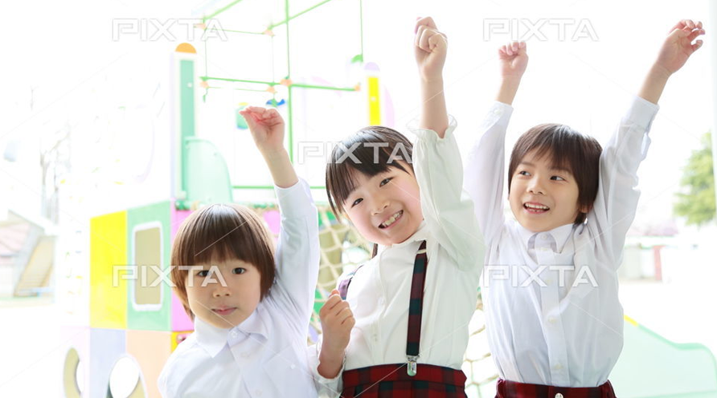

About us
子どもたちの未来のために
私たちができること
子どもを一人の人間としてその人格を尊重し、
子ども集団の中で“私”だけでなく“私たち”の素晴らしさを知り、
生活を豊かにし、将来共に生きていく強さと楽しさの根幹を築き、
社会の一員としての育成を目指します。

Concept
保育理念
「将来しあわせになる子、将来伸びていく子を育てる」
子どもを一人の人間としてその人格を尊重し、子ども集団の中で“私”だけでなく“私たち”の素晴らしさを知り、 生活を豊かにし、将来共に生きていく強さと楽しさの根幹を築き、社会の一員としての育成を目指します。
Concept
保育方針
- 生き生きとした笑顔と活動を保障し、主体性を育む教育及び保育
- 一人ひとりの特性に応じ、発達課程に即した教育及び保育
- 子どもの自発的な遊びを保障し、子どもの力を引き出す教育及び保育
- 子ども同士のかかわりを大切にする教育及び保育
- 協同的な学びを大切にした教育及び保育

園の概要
About
| 施設区分 | 幼保連携型認定こども園 |
|---|---|
| 園名 | mj保育園 |
| 住所 | 〒541-0047 大阪市中央区淡路町1-3-14 ニュー淡路町ビル4F |
| TEL/FAX | 06-6221-0080 / 06-6221-0081 |
| 受け入れ年齢 | 生後2ヶ月～就学前妊娠・出産の場合、出産前後5カ月以内等、 |
| （妊娠・出産の場合、出産前後5カ月以内等、 | |
| 入園の用件により期間が限定されることもあります） | |
| 開園時間 | 7時～20時（日・祝日：8時30分～17時00分） |
| 教育標準時間 | 9時00分～15時00分 |
| 保育標準時間 | 7時00分～18時00分 |
| 保毓短時間 | 8時30分～16時30分 |
| 休日 | 日曜日、国民の休日、年始1月1日～3日 5月3日～5月5日 |
| ※その他、理事長が必要と認めたとき（伝染病・災害等） |